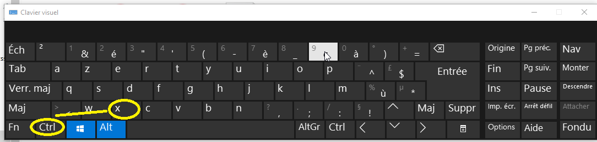
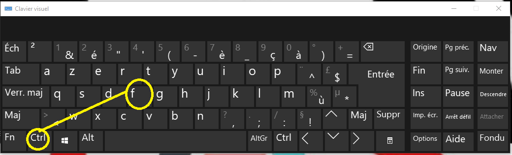

retour à l'écran d'acceuille
les racourcis windows 10 (clavier)
les racourcis clavier sont des ensemble et des combinaisons de touches qui facilitent l'exploration et la
naviguation
sur l'ordinateur ici nous allons vous prosez quelques uns qui vous seront utiles
- crtl + c permet de copier soit un mot dune phrase ou un paragraphe
- crtl + v permet de les coller
- crtl + x pour les couper

- crtl + s permet d'enregistrer
- windows + o permet d'ouvrir l'explorateur de fichier
- windows + ; permet d'ouvrir le clavier pour les émojis
- prt scr permet de prendre des acprures d'écran

- crtl + f permet d'ouvrir une barre de recherche